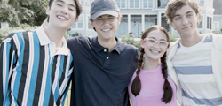

Capitulo 1: La casa de Verano
Es el primer dìa real del verano: el día en que Belly, su hermano Steven y su madre Laurel van a la playa de Cousins para quedarse con Susannah Fisher quien es como una segunda madre de Belly, y sus hijos Conrad y Jeremiah.